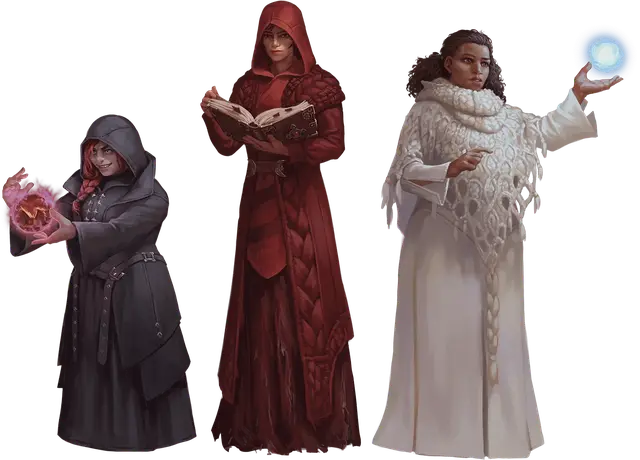

Маг Высшего Волшебства
Mage of High Sorcery

Требование: компания в сеттинге "Саги о копье"
Ваш талант к магии не обошел внимания Магов Высшего Волшебства — организации заклинателей, которая изучает магию и предотвращает ее неправильное использование. Вы обучались среди Магов, однако впереди вас ждут тяжелые и опасные испытания, после которых вы сможете стать полноценным членом этой группы. Ваша страсть к изучению магии наверняка сама определила, в каком направлении вы пойдете: доброжелательный Орден Белых одежд, преследующий баланс Орден Красных одежд и безрассудный Орден Черных одежд.
В мире Кринн многие говорят о Магах Высшего волшебства как о Волшебниках Высшего волшебства. Организация принимает не только волшебников, поэтому в их рядах можно увидеть бардов, чародеев, колдунов и других заклинателей.
Владение навыками: История, Магия.
Языки: Два на ваш выбор
Снаряжение: Бутыль цветных чернил, чернильное перо, набор обычной одежды и кошель с 10 зм.
УМЕНИЕ: Посвященный в Высшее Волшебство
Вы получаете черту «Посвящённый в Высшее волшебство».
Дополнительно, Маги Высшего волшебства предоставляют вам бесплатное скромное жилье и еду безгранично в любой своей Башне Высшего волшебства и на одну ночь в доме члена организации.
СОЗДАНИЕ ПЕРСОНАЖА Мага Высшего Волшебства
Маги Высшего волшебства обычно являются чародеями, колдунами или волшебниками и могут иметь любой подкласс. Маловероятно, что заклинатели, получающие свою магию через посвящение, будут приняты среди магов-традиционалистов. Тем не менее, Маги Высшего волшебства проницательны, и редко позволяют уникальным перспективам или личностям пройти мимо них. Даже представители боевых классов, обученых магии, изредка могут найти себе место среди трех орденов.
Безделушки Магов Высшего Волшебства. Когда вы создаете персонажа, вы можете совершить бросок по таблице «Безделушки Магов Высшего волшебства» вместо таблицы безделушек в «Книге Игрока».
Безделушки Мага Высшего Волшебства
| к6 | Безделушка |
| 1 | Запечатанное письмо от вашего первого учителя. |
| 2 | Сломанная волшебная палочка, сделанная из чёрного, красного или белого дерева. |
| 3 | Свиток с непонятной формулой. |
| 4 | Бесполезное устройство, покрытое цветными камнями, которые могут складываться в различные загадочные формы. |
| 5 | Мешочек или книга заклинаний, украшенная символом тройной луны Магов Высшего волшебства. |
| 6 | Линза, через которую вы можете увидеть невидимую луну Кринна — Нуитари. |
Маги мира «Сага о Копье»
В предыдущих воплощениях сеттинга «Сага о Копье» некоторые D&D-классы заклинателей не существовали. Чтобы взять во внимание и эти классы, группа, известная как Волшебники Высшего волшебства стали Магами Высшего волшебства. Порядки этой группы, а также из отличительные рясы остались, однако теперь в ряды организации могут попасть представители всех видов заклинателей. Те, кто обнаружил связь своей магии с фазами лун Кринна также остаются членами этой группы. Их большинство представлено в подклассе чародея под названием Лунная магия.